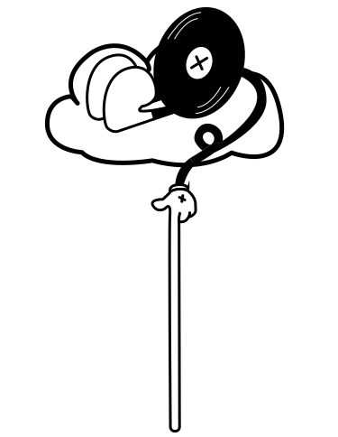

Economische Impact
De markt ondersteunt lokale ondernemers en trekt toeristen, wat positief bijdraagt aan de lokale economie. Het biedt betaalbare producten en maakt ondernemerschap toegankelijk.
Ecologische Impact
De Waterloopleinmarkt bevordert het hergebruik van goederen zoals tweedehands kleding en meubels, wat bijdraagt aan de circulaire economie en het verminderen van afval.
Sociale Impact
De markt fungeert als een sociale ontmoetingsplek, bevordert diversiteit en biedt werkgelegenheid aan een breed scala van mensen, waaronder zelfstandige ondernemers.